← 返回阅读库 · 原论文目录
论文讲解阅读文档 · 机器人学 · v110
PPG Phasic Policy Gradient[2009.04416]
视频时长 00:07:47；讲解文字 3,675 字符；提取讲解画面 27 张。按视频原顺序阅读，每段文字保留时间戳。
文字来自整段视频的自动语音转写，按自然停顿分段，并与 PPT / 论文页面 / 演示画面对齐。未将讲解压缩为摘要；术语、数字和口述公式请结合画面及原论文核对。 阅读稿已校正规范部分明确术语误识别；原始逐字稿和每处修改记录另行保留。
讲解画面为源视频截图（640×360），不是可编辑 PPT 文件。全片按每秒 2 帧扫描内容变化，逐步展开页保留；连续动画保留代表画面。清晰度受源视频限制。
下载完整资料包 · 含离线 HTML、PDF、Word、全部 PPT 画面和字幕。
原论文与材料
Phasic Policy Gradient · 下载完整 PDF（17 页）
按时间阅读
00:00:00–00:00:10 · 画面 001
 00:00:00–00:00:10 · 画面 001
00:00:00–00:00:10 · 画面 001大家好,今天我们来介绍 Phasic Policy Gradient。那么这篇论文也跟 Reinforcement Learning 中的知识蒸馏相关，而且它本身的思路其实非常简单。那么在今天的视频中我们还是简单走一个流程。那么首先让我们回顾这个 Actor-Critic、Actor-Critic 的设计，其实一直都是有两种思路，一种是说我们的 Critic,这个 State Value 函数和我们的 Actor,这个 Policy Network 这两个 Network 是分开的
00:00:10–00:00:14 · 画面 002
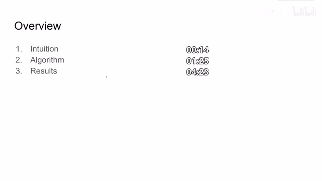
00:00:10–00:00:14 · 画面 00200:00:14–00:01:25 · 画面 003
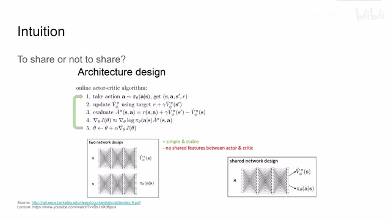
00:00:14–00:01:25 · 画面 003另一种呢就是让这两个 network 他们在前几层是能够 share 一些 parameters 然后面呢再进行分开那么很显然分开训练的两个网络呢他们的实现相对容易而且训练也相对稳定一点但是呢你总觉得说这两个网络之间不 share 点一点什么东西呢又觉得有点亏对吧所以呢就有这个 share 的但是一旦 share 呢这个结构呢又不是那么好训练因为毕竟呢他们两个一个是这个 state value 一个是 policy 他们之间的差别呢还是存在的所以为了解决这个问题本文提出了说我虽然维持两个网络但是我能不能通过蒸馏的方法把这个 state value function 中的一些信息给它蒸到我们的这个 policy network 里面这样子呢我们就尽量结合这两种设计的他们的优势好的那么我们具体来看作者是怎么样实现这样一个 distillation 呢
00:01:25–00:01:52 · 画面 004
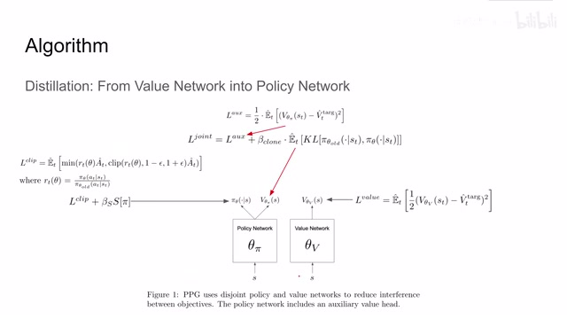
00:01:25–00:01:52 · 画面 004那么首先看到这里我们维护一个 Policy Network 维护一个 Value Network 这个配置呢就是从 PPO 作为一套的 Backbone 直接搬过来的那对于这个 Value Network 来说呢它就是标准的一个配置没有什么改变我们训练它呢也是使用 MSE 让它向上 Target Value 逼近就好了而对于这个 Policy Network 呢左边我们可能比较熟悉啊它就是直接是我们的 Policy Output 左边这一套呢都是在 PPO 里面直接拿过来的
00:01:52–00:01:54 · 画面 005
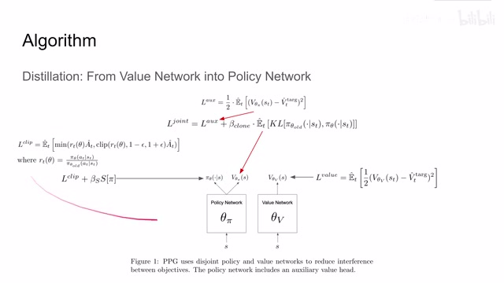
00:01:52–00:01:54 · 画面 00500:01:54–00:02:20 · 画面 006
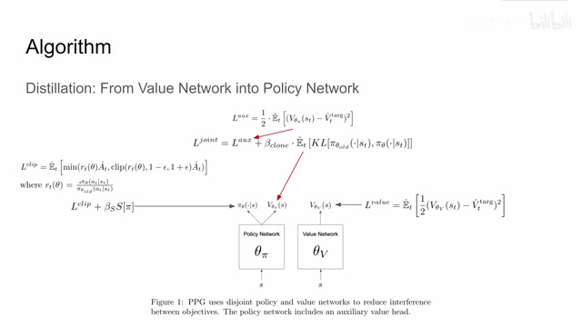
00:01:54–00:02:20 · 画面 006包括这个鼓励我们一直能去探索的这个 entropy term 都在 ppo 里面有详细的描述那么右边这部分呢我们可以发现他多了另一个 head 这个 head 呢是我们 policy network 中的这个 value function 那么他的目的很显然了就是通过他帮助我们把我们的这个 value network 的知识蒸馏到我们的 policy network 里面那我们来看作者是怎么样定义他的 loss 呢
00:02:20–00:02:50 · 画面 007
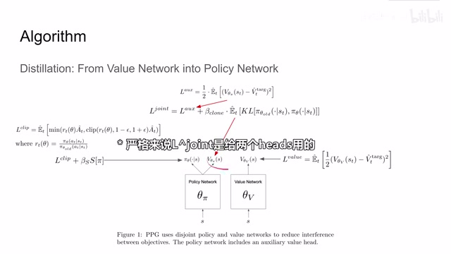
00:02:20–00:02:50 · 画面 007那最直接的就是也是一个 MSE 让我们的这个 policy network 的这个 value 函数呢向我们真正的 value network 它的值来做规划那么单身这样逼近呢显然不够的万一说我们这个训练的过程中把我们的 policy network 带偏了怎么办呢这里呢作者还做了一个 behavior cloning 也就是说我们在这个蒸馏之前的这个 policy 和这个蒸馏之后的这个 policy 他们两个之间的 KL divergence 不应该区别太大
00:02:50–00:02:56 · 画面 008
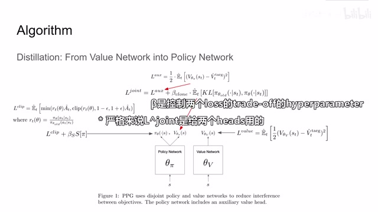
00:02:50–00:02:56 · 画面 008这样子呢这个联合的这个 loss 呢就是我们最后在蒸馏的阶段或者说按照这里作者的教法是 auxiliary 也就是辅助的训练阶段使用的这个 loss function 那么我们继续来看作者提出的奥规是什么首先呢我们创建一个 buffer 使用我们的当前的 policy 呢去收集一些样本然后呢我们估算里面每个 state 的这个 state value 所谓我们的 target 在这个基础上呢优化我们的这个 policy 这块呢就是 PPO
00:02:56–00:03:03 · 画面 009
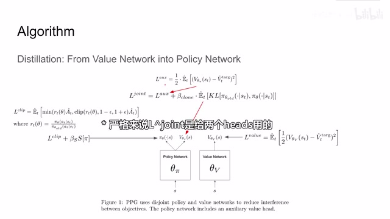
00:02:56–00:03:03 · 画面 00900:03:03–00:04:16 · 画面 010
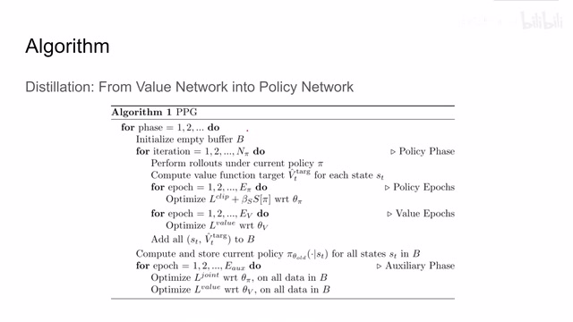
00:03:03–00:04:16 · 画面 010然后呢再去优化我们的 state value function 那么最后呢记得把这个 state 还有我们的 target value 呢都给它压到我们的 buffer 里面因为这些样本呢我们要留着继续训练我们的这个 state value function 它对我们估算准确的 state value function 是非常有用的那么上面这部分呢就是一个经典的 PPO 那么下面呢我们就要把 state value function 中的知识呢给它蒸馏到这个 policy network 里面了记得我们之前是为了保证我们的 policy 变化不是太多
我们需要用过去的 policy 来得到一个 distribution，这样呢，在这个 auxiliary phase 里面呢，我们就可以训练这个 policy network，它的一个 end 呢是 mse，来把这个 distillation 这个 head 来向我们的这个 state value function 推，那么另一个 end 呢就是我们的这个 policy 它的 kl divergence 和我们旧的 policy 不能差太大，那么随后呢，这里我们又再次训练了一下这个 state value function
那么以上呢，就是本文提出的这个 PPG 它的方法，好的，那么我们就可以看到作者汇报的一些实验结果，首先肯定是和我们的这个 backbone 和 baseline 来做比较嘛，就是 PPO，那么显然本文提出的方法呢，相对于这个 PPO 有更高的这个 data efficiency，那么随后呢，作者研究了这个 policy sample reuse，也就是说，我在这个阶段
00:04:16–00:04:17 · 画面 011
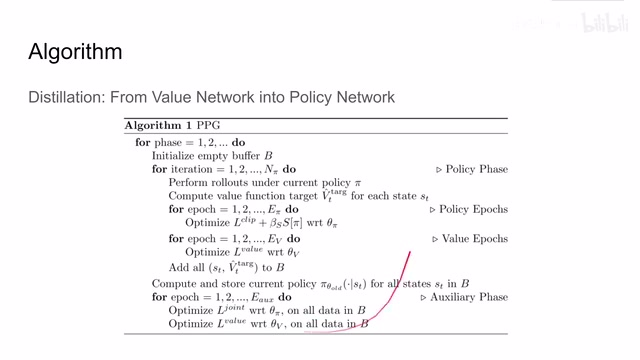
00:04:16–00:04:17 · 画面 01100:04:17–00:04:22 · 画面 012
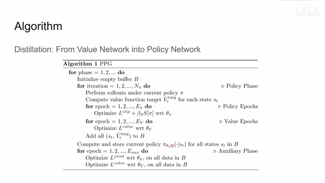
00:04:17–00:04:22 · 画面 01200:04:22–00:04:23 · 画面 013
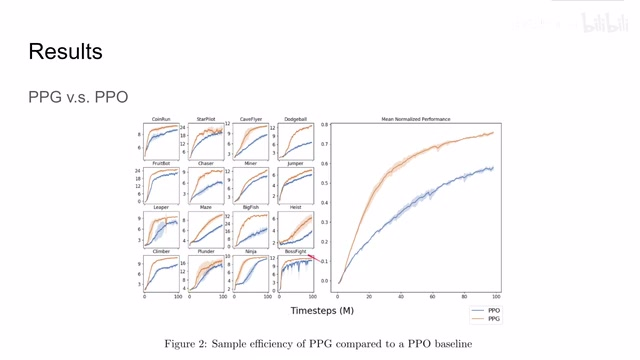
00:04:22–00:04:23 · 画面 01300:04:23–00:04:34 · 画面 014
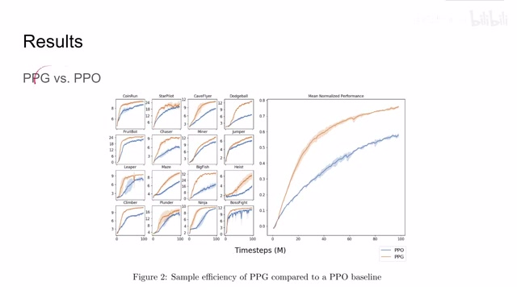
00:04:23–00:04:34 · 画面 01400:04:34–00:04:53 · 画面 015
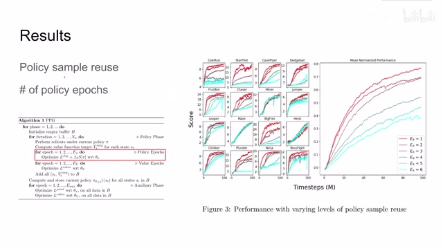
00:04:34–00:04:53 · 画面 015我该重复多少个这个 policy epochs，通过更改它呢，我们就能够确定我们训练 policy 和这个 value network 他们之间的相对的训练速度，那么最后呢，作者实现发现这个还是等于 1，就是我训练一次 policy，训练一次 value 这样的组合呢，是最合适的，那顺便提一下呢，这个 n 派作者选择的是 32
00:04:53–00:04:54 · 画面 016
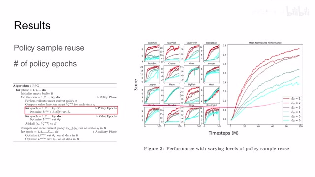
00:04:53–00:04:54 · 画面 01600:04:54–00:05:03 · 画面 017
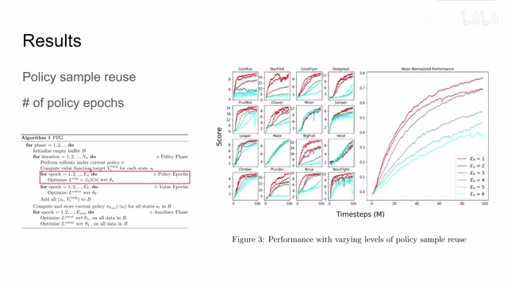
00:04:54–00:05:03 · 画面 01700:05:03–00:05:24 · 画面 018
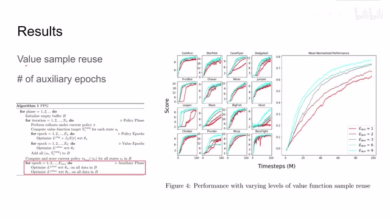
00:05:03–00:05:24 · 画面 018那么在这之后呢作者还研究了这个 value sample reuse 也就是这个 auxiliary phase 我们应该训练多少次那么这里呢我们可以看到显然是随着它的次数的增加呢我们取得的 data efficiency 呢是越来越好的但是因为这个 epoch 在大于 6 之后呢它的取得的收益呢就不是那么明显了所以在最终的版本中呢作者选择的这个值呢等于 6 那么在这一组实验中呢作者尝试了这个 kl penalty 和这个 clipping 那么简单来说呢就是原来在 PPO 这篇论文里面呢
00:05:24–00:05:54 · 画面 019
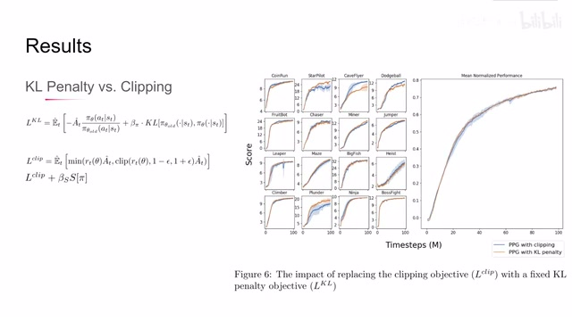
00:05:24–00:05:54 · 画面 019除了这个 clipping，作者还提出了一种我通过增加这个 kl divergence 作为 penalty 这样的一种设置呢，来尝试去做我们的 policy gradient同时呢，我这个 beta pi 作为一个 hyper parameter 控制这两项的 tradeoff，在 PPO 那篇论文中呢，作者有一套机制去自动的调整这个值，那么但是呢，在 PPO 那篇论文中呢，作者说这样子折腾了一堆下来性能呢比这个直接 clipping 效果还要差一些，所以说呢，这只是一个方案，PPO 的作者提了出来，那么在本文这个 PPG 里面呢，本文的作者说我也试试这个吧
00:05:54–00:05:55 · 画面 020
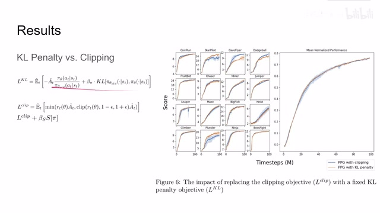
00:05:54–00:05:55 · 画面 02000:05:55–00:06:30 · 画面 021
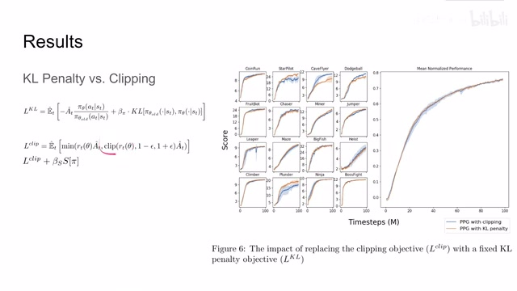
00:05:55–00:06:30 · 画面 021但是呢，它的这个 hyperparameter 这个 beta pi 选的是一个固定的值，就是说去掉了这个动态调整这个 tradeoff 的这个过程，而且这个配置相对于这个 clipping 是拿掉了这个 entropy term 的，那么实验人来看发现哎，这两个区别并不是很大，这里呢，本文的作者说我们确实可以再研究一下这个使用这个 kl divergence kl penalty 来做我们优化的
00:06:30–00:06:31 · 画面 022
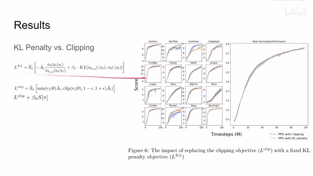
00:06:30–00:06:31 · 画面 022这种方法我们确实可以再继续研究下这些方面的东西，那么最后的最后作者说，我能不能使用一个单独的网络来做这个 PPG 呢，也就是说，我把我的这个 Policy Network 和这个 State Value Network 给它还是放到一个 Network 里面，但是呢，我在训练的时候呢，前面这部 PPO 训练的时候是不训练他们两个 Network 共享的参数的
00:06:31–00:06:35 · 画面 023
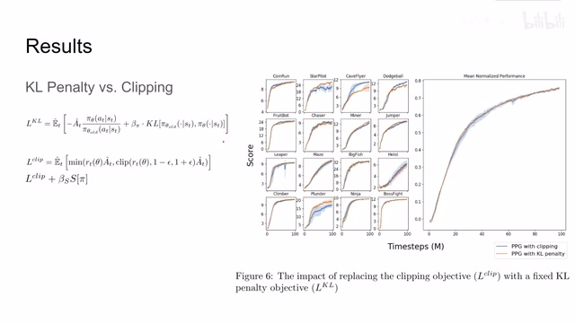
00:06:31–00:06:35 · 画面 02300:06:35–00:06:55 · 画面 024
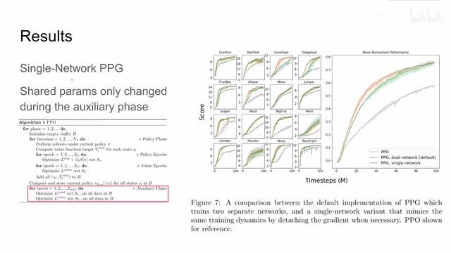
00:06:35–00:06:55 · 画面 024而只有在后面 auxiliary phase 这个阶段它会训练整个 network，那么这样对比下来发现我们使用一个网络的配置略微的差于使用两个网络的配置，但是只要你训练的足够长他们的结果是非常接近的，而且无论哪种配置都 outperform 之前的 PPO，那么这种配置在我看来是最香的，因为你使用一个网络直接把两个网络的事情都干了，然后他们的训练也不是那么相互干扰
00:06:55–00:06:56 · 画面 025
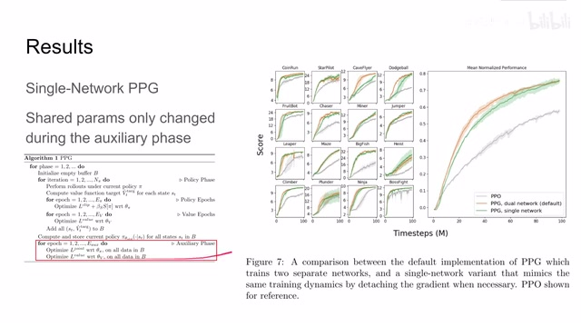
00:06:55–00:06:56 · 画面 02500:06:56–00:07:46 · 画面 026
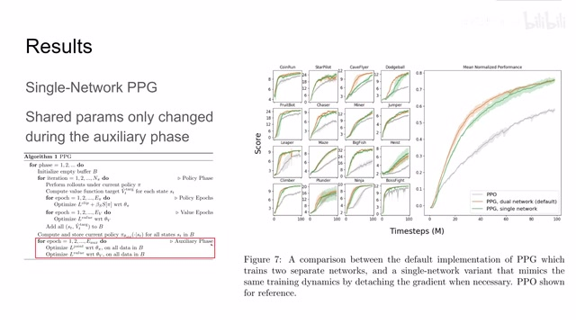
00:06:56–00:07:46 · 画面 026好的，那么总结来说，本文呢为了解决是使用两个分开的 Network，还是使用一个有 Shared Parameters 这样的一个 Network 设计出的 PPG 这样一种方法，我们实际看来呢，它比之前的这个 Baseline PPO 要性能提升很多，还是非常有意思的一篇文章。那么以上就是我对这篇论文的简单分析，感谢您的收看，再见。
00:07:46–00:07:47 · 画面 027
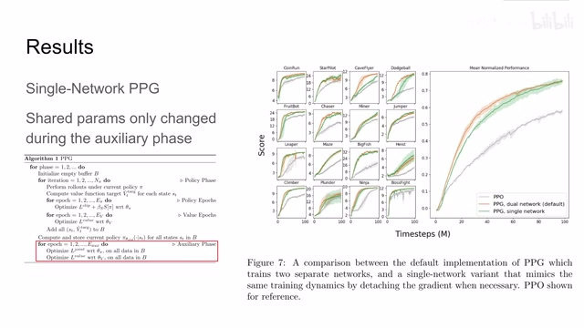
00:07:46–00:07:47 · 画面 027转写与来源说明 · 0 个自动复核提示
保留 18 个原始语音片段，0 个片段触发自动复核提示。提示仅用于定位可能的术语、重复或识别问题，不等于已确认错误。
讲解画面为源视频截图（640×360），不是可编辑 PPT 文件。全片按每秒 2 帧扫描内容变化，逐步展开页保留；连续动画保留代表画面。清晰度受源视频限制。
原视频：paper/合集_2026-10-16_机器人学/[论文简析]PPG Phasic Policy Gradient[2009.04416].mp4
SHA-256：0d96a0ed5c26e3bc7ac1729ac6fd88de77ae2797661ac0d91f3a37779dffc931
全文按视频语音与画面制作。原论文可从上方链接下载；完整资料包保留全文、原始逐字稿、字幕和校对记录。